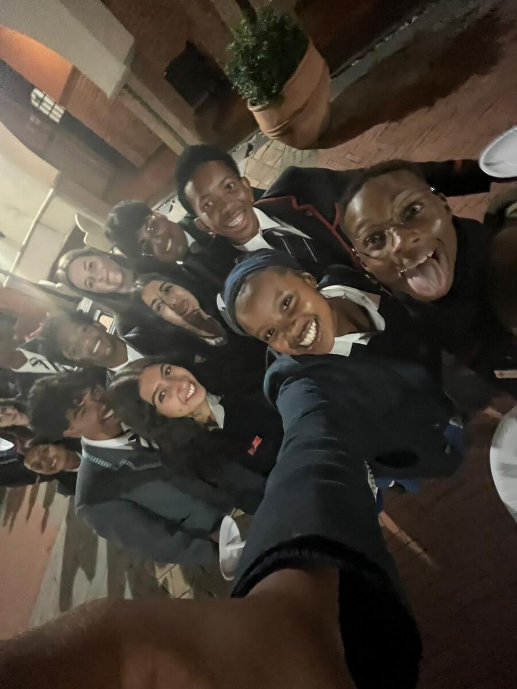

Centenary dinner
Holy Family College. Keynote by journalist Paula Slier, and a reflection from Daniella Kilfoil, a former Mini and Junior Councillor who now sits on the Governing Body.
Details and RSVPEighty Grade 11 councillors, nominated by schools across Greater Johannesburg. Founded in 1926, and still running projects across the city.
The Johannesburg Junior Council is made up of 80 Grade 11 learners, nominated by 40 secondary schools in the Greater Johannesburg area.
Councillors work together for about three months, then elect their own leadership: two Co-Mayors, a Chairman of Management, a Chief Whip and the chairpersons of the five committees. A Governing Body of parents and interested members of the public supports the council, which is a registered non-profit.
Read the full story

Two dates mark the centenary. Everyone connected to the council over the years is welcome.
Holy Family College. Keynote by journalist Paula Slier, and a reflection from Daniella Kilfoil, a former Mini and Junior Councillor who now sits on the Governing Body.
Details and RSVPThe council's birthday celebration. Venue to be confirmed.
DetailsEvery councillor sits on one of five committees. Each runs its own projects and events.

Student mental health, emotional wellness and peer support across Joburg's schools.

Creativity, heritage and the cultural life of the city.

Physical activity, teamwork and active lifestyles.

Sustainability, clean-ups and green awareness.

The council in service of the wider community: visits, drives and partnerships.


Schools, partners, alumni and supporters: there is a place for you in the centenary year.